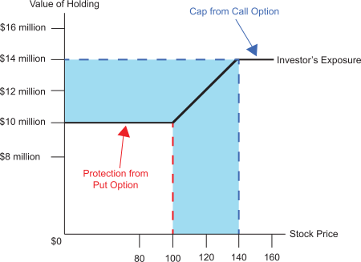

While holding a put option can provide protection against downside risk, which is the greatest risk to an equity concentration, the cost of the put option is not a negligible expense. To offset that expense, investors will often generate the income needed to pay for the put by writing a call option on the stock.
To illustrate, let's continue with the example of the investor who holds 100,000 shares of 3M Corporation, currently selling at $120 per share, on which a put option has been purchased that allows the investor the option of selling the stock at $100 per share. Suppose the investor writes (sells) a call option that gives the holder of the option the right to buy the stock at $140 per share. Let's further suppose that the maturity date of the call option coincides with that of the put option previously purchased and that the price of the call option is the same as was paid for the put option. The result is that when the investor sells the call option, he/she uses the income from the sale to pay for the put option. The end result is that this combination of purchasing a put option and writing (selling) a call option is at "zero cost" to the investor.
The investor's exposure is depicted in the diagram below. The writing of the call option causes the investor's exposure line to go horizontal at $140 per share. If the market price of the stock exceeds $140 per share, the option will be exercised. But the most the investor can now receive is $140 per share, no matter how high the price goes in the market.

As can be seen by the shaded area in the diagram, when the investor writes a call option in combination with purchasing a put option, a range is created in which the price may move without either option being exercised. Whenever this combination of a put and a call option is created, it is referred to as a "collar." In other words, the investor has placed a "collar" around the current price of $120. Within the range of that collar, the investor will participate in the gain or loss in the stock price, but the investor's opportunity and risk cannot go outside of those bounds. When such a collar is structured so that the cost of the put equals the income from the call, it is referred to as a "zero-premium collar." Its advantages and disadvantages are briefly listed below.